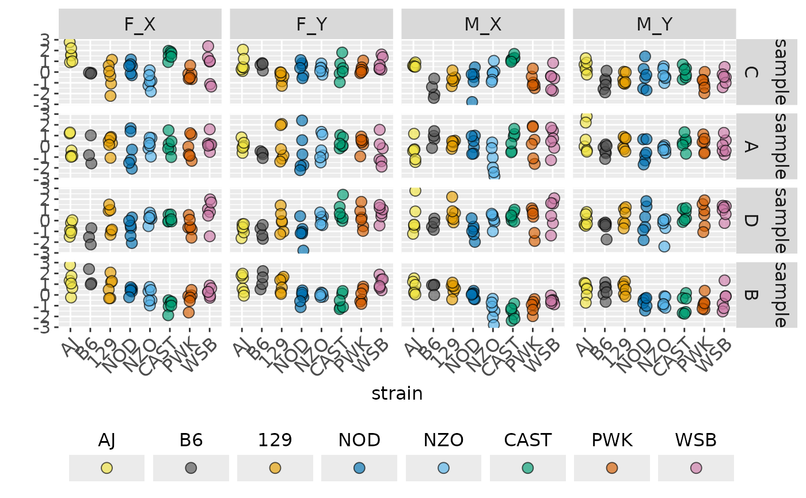

Select Traits and Strains for Response
traitSolos.RdSelect Traits and Strains for Response
Summary of traitSolos object
Summary of traitSolos object
Usage
traitSolos(
traitData,
traitSignal = partition(traitData),
traitnames = trait_names(traitData),
response = c("value", "normed", "cellmean", "signal"),
strains = names(foundr::CCcolors),
abbrev = FALSE,
sep = ": "
)
summary_traitSolos(object, customSettings = NULL, ...)
# S3 method for class 'traitSolos'
summary(object, ...)Arguments
- traitData
data frame
- traitSignal
data frame
- traitnames
names of `dataset: trait` combinations to subset
- response
name of response to return
- strains
names of strains to subset
- abbrev
abbreviate names if `TRUE`
- object
object of class `traitSolos`
- customSettings
list of custom settings (including "condition_name" and "dataset")
- ...
additional parameters
Examples
out <- traitSolos(sampleData)
summary(out)
#> # A tibble: 16 × 12
#> dataset sex condition trait AJ B6 `129` NOD NZO CAST
#> <fct> <chr> <chr> <fct> <dbl> <dbl> <dbl> <dbl> <dbl> <dbl>
#> 1 sample F Y C 0.752 0.599 -0.487 0.342 0.258 0.316
#> 2 sample F X C 1.67 -0.0951 -0.307 0.432 -0.812 1.58
#> 3 sample M X C 0.625 -1.62 -0.648 -0.681 -0.114 1.25
#> 4 sample M Y C 0.508 -1.00 -0.626 -0.380 -0.254 -0.0314
#> 5 sample F Y A 0.0706 -0.708 0.0666 -0.589 -0.217 0.334
#> 6 sample F X A -0.115 -0.459 0.256 -0.351 0.136 0.114
#> 7 sample M X A -0.420 0.733 0.258 0.167 -1.34 0.494
#> 8 sample M Y A 0.792 -0.365 0.264 -0.510 -0.225 0.354
#> 9 sample F Y D -0.798 -1.04 -0.0708 -1.09 0.130 0.826
#> 10 sample F X D -0.763 -1.48 0.0542 -0.723 0.225 0.174
#> 11 sample M X D 0.161 -0.356 0.673 -0.888 0.105 0.416
#> 12 sample M Y D 0.0674 -0.569 0.324 0.0306 -0.527 0.542
#> 13 sample F Y B 1.03 1.35 0.930 -0.216 0.0136 -0.604
#> 14 sample F X B 1.22 1.49 0.738 0.384 -0.0764 -0.956
#> 15 sample M X B 0.712 0.686 0.552 -0.0174 -1.42 -1.65
#> 16 sample M Y B 0.434 0.382 0.576 -0.712 -0.714 -0.912
#> # ℹ 2 more variables: PWK <dbl>, WSB <dbl>
plot(out)
